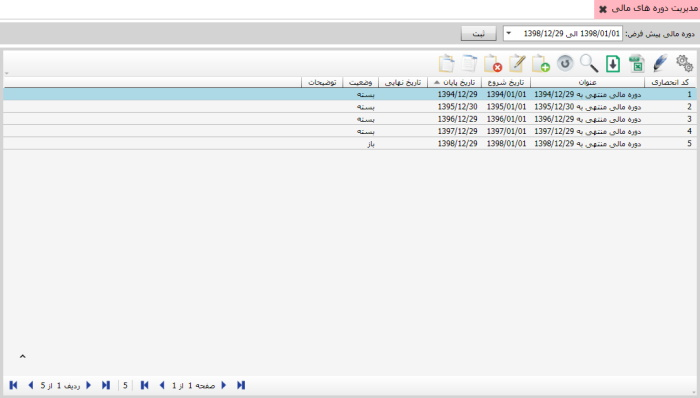
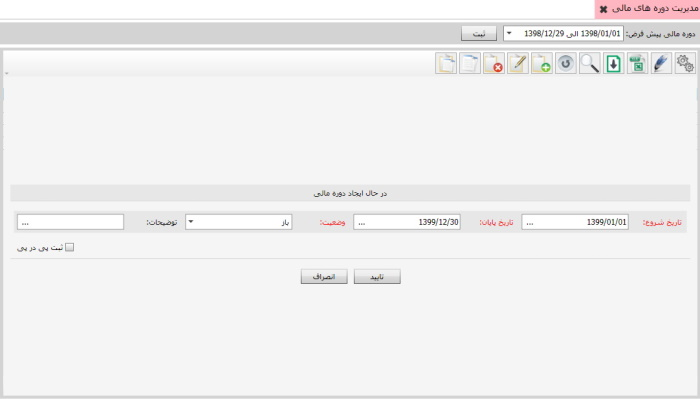
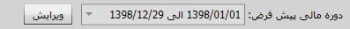

در این قسمت میتوانید دوره های مالی مد نظر را معرفی نمایید و دوره مالی پیش فرض برای صدور اسناد را در نرم افزار تعیین کنید شکل زیر صفحه مدیریت دوره های مالی را نمایش می دهد
در تصویر بالا می توانید لیست دوره های مالی را مشاهده کنید برای ایجاد یک دوره ی مالی جدید گزینه ی اضافه یا F8 را بزنید تصویر زیر نمایان خواهد شد

هنگام ایجاد دوره مالی باید فیلد وضعیت در حالت باز قرار گیرد
تا بتوان در دوره مالی ایجاد شده اسناد مختلف صادر کرد
در پایان دوره مالی پس از بستن حساب ها و انجام عملیات پایان دوره،
می توانید وضعیت دوره مالی را در حالت بسته قرار دهید.
با این کار دیگر امکان ویرایش اسناد دوره مالی بسته شده وجود نخواهد داشت
تا زمانی که مجددا وضعیت دوره مالی به حالت باز ویرایش شود.
در نهایت با تکمیل اطلاعات صفحه ی بالا و زدن گزینه ی تایید
یک دوره ی مالی جدید تعریف خواهد شد
برای تعیین دوره ی مالی پیش فرض عکس زیر را مشاهده کنید

با زدن گزینه ویرایش و انتخاب دوره مالی مورد نظر از لیست کشویی باز شده، دوره مالی پیش فرض تعیین می گردد.